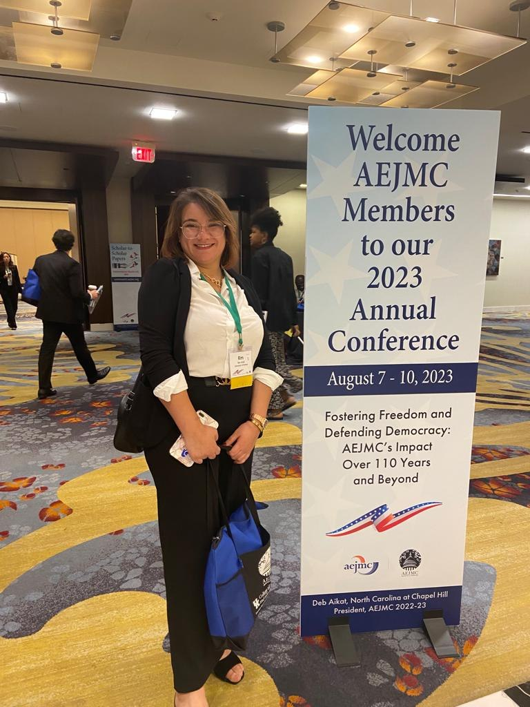

This study explores how Algerian feminist activists engaged with social media during the 2019 demonstrations, and how they understood the tools available to them for advancing women’s rights and visibility in public life.
Drawing on structured, open-ended questionnaires with Algerian feminist participants, the research examines their perspectives on social media as a space for feminist expression and organizing. Findings reveal a thoughtful caution among Algerian feminists toward open social media spaces, and a preference for a more pluralistic, multi-voiced approach to advocacy.
The study contributes to scholarship on feminist digital activism and women’s participation in public discourse, foregrounding the perspectives and experiences of the women themselves.
